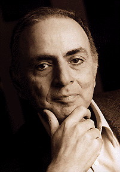

Biography
Carl Sagan was born in Brooklyn, New York.He attended the University of Chicago, where he participated in the Ryerson Astronomical Society, received a bachelor of arts in self-proclaimed "nothing" with general and special honors in 1954, a bachelor of science in physics in 1955, and a master of science in physics in 1956 before earning a PhD in astronomy and astrophysics in 1960. During his time as an honors program undergraduate, Sagan worked in the laboratory of the geneticist H. J. Muller and wrote a thesis on the origins of life with physical chemist H. C. Urey. He used the summer months of his graduate studies to work with planetary scientist Gerard Kuiper (thesis advisor), physicist George Gamow, and chemist Melvin Calvin. From 1960 to 1962 Sagan was a Miller Fellow at the University of California, Berkeley. From 1962 to 1968, he worked at the Smithsonian Astrophysical Observatory in Cambridge, Massachusetts. At the same time, he worked with geneticist Joshua Lederberg.
Sagan lectured and did research at Harvard University until 1968, when he moved to Cornell University in Ithaca, New York, after being denied tenure at Harvard. It has been suggested that Sagan was denied tenure in part because of his publicized scientific advocacy, which some scientists perceived as being self-promotion; his denial was at least partly due to Harold Urey sending an anti-Sagan letter to the tenure committee. He became a full professor at Cornell in 1971, and directed the Laboratory for Planetary Studies there. From 1972 to 1981, Sagan was associate director of the Center for Radiophysics and Space Research (CRSR) at Cornell.
Sagan was associated with the U.S. space program from its inception. From the 1950s onward, he worked as an advisor to NASA, where one of his duties included briefing the Apollo astronauts before their flights to the Moon. Sagan contributed to many of the robotic spacecraft missions that explored the Solar System, arranging experiments on many of the expeditions. He conceived the idea of adding an unalterable and universal message on spacecraft destined to leave the Solar System that could potentially be understood by any extraterrestrial intelligence that might find it. Sagan assembled the first physical message that was sent into space: a gold-anodized plaque, attached to the space probe Pioneer 10, launched in 1972. Pioneer 11, also carrying another copy of the plaque, was launched the following year. He continued to refine his designs; the most elaborate message he helped to develop and assemble was the Voyager Golden Record that was sent out with the Voyager space probes in 1977. Sagan often challenged the decisions to fund the Space Shuttle and the International Space Station at the expense of further robotic missions.
Sagan's ability to convey his ideas allowed many people to understand the cosmos better—simultaneously emphasizing the value and worthiness of the human race, and the relative insignificance of the Earth in comparison to the Universe. He delivered the 1977 series of Royal Institution Christmas Lectures in London. He hosted and, with Ann Druyan, co-wrote and co-produced the highly popular thirteen-part Public Broadcasting Service (PBS) television series Cosmos: A Personal Voyage.
Cosmos covered a wide range of scientific subjects including the origin of life and a perspective of our place in the Universe. The series was first broadcast by PBS in 1980, winning an Emmy and a Peabody Award. It has been broadcast in more than 60 countries and seen by over 500 million people, making it the most widely watched PBS program in history. In addition, Time magazine ran a cover story about Sagan soon after the show broadcast, referring to him as "creator, chief writer and host-narrator of the new public television series Cosmos, [and] takes the controls of his fantasy spaceship". However, Sagan was criticized for putting too much attention into the series, with several of his classes at Cornell being cancelled and complaints from his colleagues.
Sagan was a proponent of the search for extraterrestrial life. He urged the scientific community to listen with radio telescopes for signals from potential intelligent extraterrestrial life-forms. Sagan was so persuasive that by 1982 he was able to get a petition advocating SETI published in the journal Science and signed by 70 scientists, including seven Nobel Prize winners. This was a tremendous increase in the respectability of this controversial field. Sagan also helped Frank Drake write the Arecibo message, a radio message beamed into space from the Arecibo radio telescope on November 16, 1974, aimed at informing potential extraterrestrials about Earth.